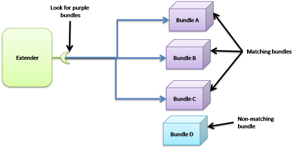

The extender pattern handler
The objective of this handler is to simplify the development of extender-based architecture. This architecture-style is based on two different roles:
- The extender
- The extension

The relation is basically a 1..n relation. The extender tracks extensions. The particularity of this architecture-style is that extensions are packaged in different bundles. An extension is detected by analyzing the bundle. Indeed these bundles can have a special mark in their manifest of a special file...
Implementing an extender pattern could be complex as the extender needs to track these marks dynamically. When a bundle starts, it needs to look at the mark. Then a bundle leave, the extender must release all object created from this bundle.
This handler tracks bundle for you based on the specified required mark. At each time a matching bundle appears or disappears, a callback is invoked. The mark is currently a header in the bundle manifest.
Nowadays, a lot of frameworks use this pattern such as iPOJO it-self (to find both bundles containing components and bundles adding a new implementation type), Spring-DM ...
Using the handler
First of all, you need to configure the component type to use the handler such as:
<iPOJO xmlns:extender="org.apache.felix.ipojo.extender">
<Component
className="org.apache.felix.ipojo.extender.myextender">
<!—Extender Pattern handler configuration -->
<extender:extender
extension="My-Extension"
onArrival="onBundleArrival"
onDeparture="onBundleDeparture"
/>
<callback transition="invalidate" method="stopping" />
<callback transition="validate" method="starting" />
<provides />
</Component>
</iPOJO>
Notice that, this handler is an external handler. So, it uses the "org.apache.felix.ipojo.extender" namespace.
Once described, you can implement your component. The methods specified methods will be called when a matching bundle arrives or leaves.
In the previous example, these methods could be:
void onBundleArrival(Bundle bundle, String header) {
}
void onBundleDeparture(Bundle bundle) {
}
Notice the different signatures of the methods. The arrival method is called with the arriving bundle and the matching header value (i.e. the value of the My-Extension header of the bundle manifest). The departure method just receives the leaving bundle.
Configuration
The handler has only three mandatory attributes:
- Extension: declaring the looked manifest header.
- onArrival: declaring the method to invoke when a matching bundle arrives
- onDeparture: declaring the method to invoke when a matching bundle leaves
 |
The implementation will be notified of arrivals and departures despite the instance is invalid. Indeed, the implementation must release all objects created from another bundle as soon it leaves. |
Download
The handler is available on the download page.
Sources are available on the Felix trunk at the following location: http://svn.apache.org/repos/asf/felix/trunk/ipojo/handler/extender/
A more realistic example
The Junit4OSGi framework, available here , uses this handler to track Junit Test Suite offered by the installed bundles. The Junit4Osgi bundle has a component using this handler to be notified when a bundle with the "Test-Suite" header appears or leaves.
|